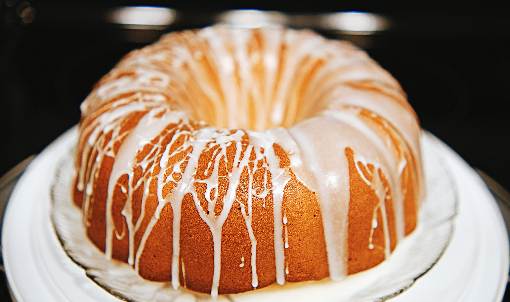
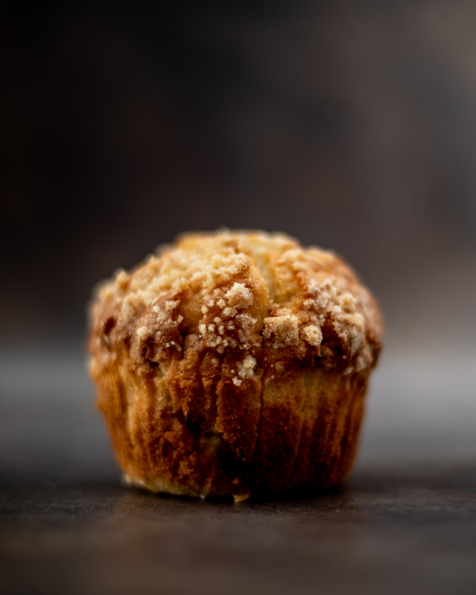

- Chocolate cake
- Lemon drizzle cake 
- Coffee cake
- Apple crumble
- Cookies
- Apple and cinamon cake 

This is a fairly new recipe to me, but it immediately won me over. This produces an extremely moist, and rich chololate cake which (if baked correctly) is not too dense. The recipe included here uses a dark chocolate ganache to ice the cake which I think works well because the cake on its own is very sweet. Buttercream icing is of course another option which will be mentioned in the optional extras section.
Lemon drizzle cake is the perfect cake to have with a cup of tea in the afternoon. This particular cake recipe has been modified to make cupcakes which have an intense lemon flavour. The intensity of the flavour can be easily modified by changing the ammount of syrup used. You can also go a bit wild and add flavours to the syrup if you wish.


A classic recipe which is my go to in winter. There is nothing better than a hot bowl of apple crumble with rich custard on a cold rainy day.